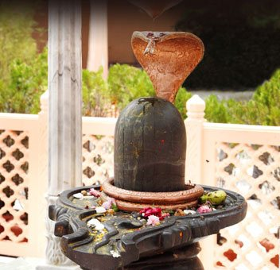

Shivratri:
Dedicated to Lord Manguesh, an incarnation of Lord Shiva, the temple is in Ponda taluk and is sacred to Hindus. Painted white and yellow,
and is a perfect mix of Hindu, Christian and Muslim architecture. Mahashivaratri, which falls in February-March is a big event here.